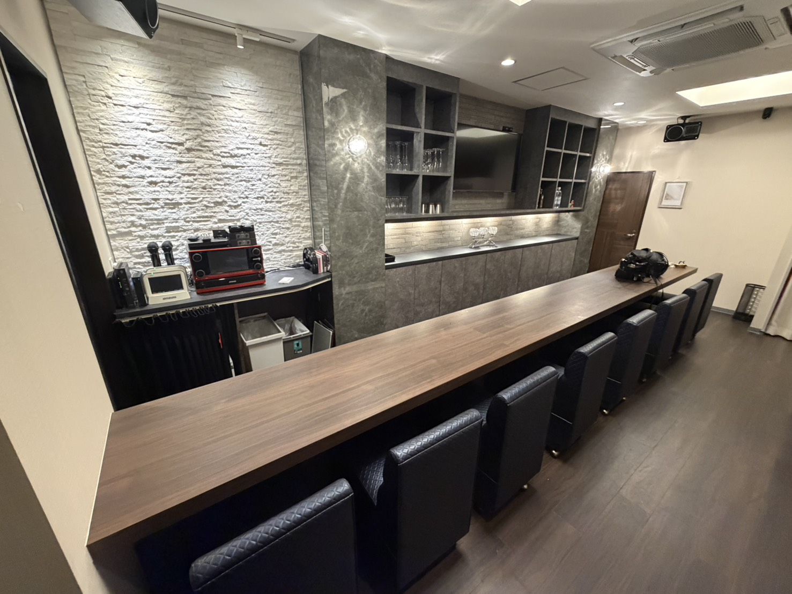

Reason
4つの特徴

01
本格占いをBARで気軽に
姓名判断、西洋占星術、タロット、オラクルカードなど、本格的な鑑定をお酒とともに楽しめます。
占い店に入るのは少し緊張するという方にも、BARならではのカジュアルな雰囲気で気軽にご相談いただけます。

02
経験豊富な占術師が在籍
占い歴21年のMASTERをはじめ、タロットを専門とするCASTも鑑定を担当。
恋愛や仕事、相性、人生の方向性など、お悩みに合わせて丁寧に読み解きます。

03
飲み放題＆カラオケも楽しめる
ドリンクは60分飲み放題制。
お酒やソフトドリンクを楽しみながら、カラオケで盛り上がったり、ゆっくり過ごしたりと、その日の気分に合わせてお楽しみいただけます。

04
アクセスしやすく、立ち寄りやすい
胡町電停・銀山町電停から徒歩3分圏内。
白を基調とした入りやすいビル内にあり、仕事帰りやお出かけのあとにも気軽に立ち寄れる立地です。